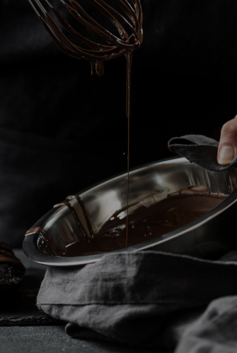

<section class="made-section section">
    <div class="container made-container">
        <h2 class="made-title">HOW IT'S <span class="made-title-second">MADE?</span></h2>
        <div class="made-wrapper">
            <div class="video-box">
                <picture>
                    <source media="(min-width: 1200px)" srcset="../img/preview-desk.jpeg 1x, ../img/preview-desk@2x.jpeg 2x">
                    <source media="(min-width: 768px)" srcset="../img/preview-tab.jpeg 1x, ../img/preview-tab@2x.jpeg 2x">
                    <source media="(min-width: 320px)" srcset="../img/preview-mob.jpeg 1x, ../img/preview-mob@2x.jpeg 2x">
                    
                </picture>
                <button class="play-button">
                    <svg class="icon-video-play">
                        <use href="../img/icons.svg#icon-video-play"></use>
                    </svg>
                </button>
                <div>
                    <iframe class="made-video" width="560" height="315" src="https://www.youtube.com/embed/41UbWmXKWkc"
                        title="YouTube video player"
                        allow="accelerometer; autoplay; clipboard-write; encrypted-media; gyroscope; picture-in-picture; web-share"
                        allowfullscreen>
                    </iframe>
                </div>
            </div>
            <div class="container-made-list">
                <p class="made-text">
                    Try our chocolates today and discover the perfect balance of flavor
                </p>
                <ul class="made-list">
                    <li class="made-item">
                        Heat the milk in a saucepan without bringing it to a boil. Add sugar and cocoa powder.
                    </li>
                    <li class="made-item">
                        At the same time, prepare a water bath. Melt the butter on it.
                    </li>
                    <li class="made-item">
                        "Mix" the milk mixture and already liquid butter. Mix thoroughly with a silicone spatula so that the
                        mass becomes uniform and silky.
                    </li>
                    <li class="made-item">
                        Heat the mixture over low heat, letting it barely boil.
                    </li>
                    <li class="made-item">
                        Pour the chocolate into special containers (can be replaced with ice molds). Allow to cool and
                        harden.
                    </li>
                </ul>
            </div>
        </div>
    </div>
</section>